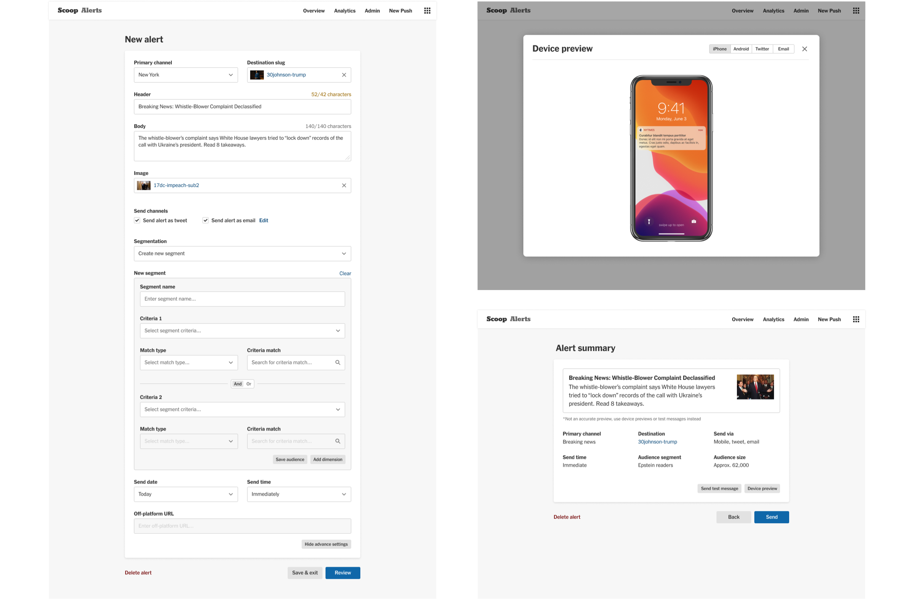
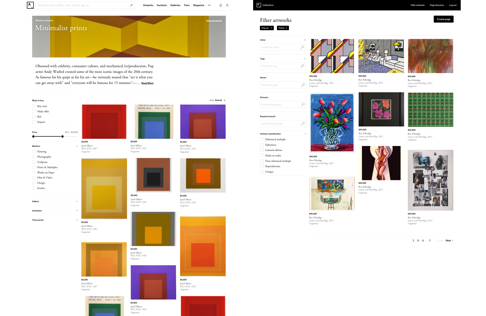
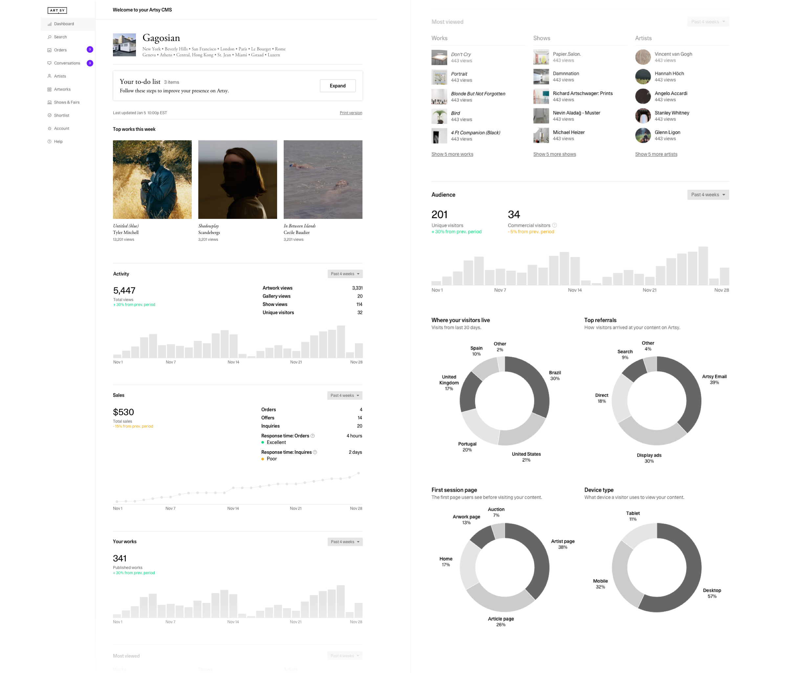

Select Product Design

City Guide for iOS, Artsy

Ink design system documentation, The New York Times
Push notification workflow, The New York Times
Collections pages, Artsy
Galleries analytics dashboard, Artsy

Feature articles, Artsy